pacman::p_load(ggrepel, patchwork,
ggthemes, hrbrthemes,
tidyverse,
GGally, viridis, ggridges, scales, gridExtra)Hands-on Exercise 2
Beyond ggplot2 Fundamentals
1 Overview
In this hands-on exercise, I will explore several ggplot2 extensions for creating more elegant and effective statistical graphics. By the end of this exercise, I will be able to:
- Control the placement of annotation on a graph by using functions provided in ggrepel package
- Create professional publication quality figures by using functions provided in ggthemes and hrbrthemes packages
- Plot composite figures by combining ggplot2 graphs using patchwork package
Additionally, I will conduct comprehensive data-driven analysis with dynamic insights extracted directly from the examination results.
2 Getting Started
2.1 Installing and Loading Required Libraries
2.2 Importing Data
exam_data <- read_csv("data/Exam_data.csv")2.3 Initial Data Exploration
glimpse(exam_data)Rows: 322
Columns: 7
$ ID <chr> "Student321", "Student305", "Student289", "Student227", "Stude…
$ CLASS <chr> "3I", "3I", "3H", "3F", "3I", "3I", "3I", "3I", "3I", "3H", "3…
$ GENDER <chr> "Male", "Female", "Male", "Male", "Male", "Female", "Male", "M…
$ RACE <chr> "Malay", "Malay", "Chinese", "Chinese", "Malay", "Malay", "Chi…
$ ENGLISH <dbl> 21, 24, 26, 27, 27, 31, 31, 31, 33, 34, 34, 36, 36, 36, 37, 38…
$ MATHS <dbl> 9, 22, 16, 77, 11, 16, 21, 18, 19, 49, 39, 35, 23, 36, 49, 30,…
$ SCIENCE <dbl> 15, 16, 16, 31, 25, 16, 25, 27, 15, 37, 42, 22, 32, 36, 35, 45…summary(exam_data) ID CLASS GENDER RACE
Length:322 Length:322 Length:322 Length:322
Class :character Class :character Class :character Class :character
Mode :character Mode :character Mode :character Mode :character
ENGLISH MATHS SCIENCE
Min. :21.00 Min. : 9.00 Min. :15.00
1st Qu.:59.00 1st Qu.:58.00 1st Qu.:49.25
Median :70.00 Median :74.00 Median :65.00
Mean :67.18 Mean :69.33 Mean :61.16
3rd Qu.:78.00 3rd Qu.:85.00 3rd Qu.:74.75
Max. :96.00 Max. :99.00 Max. :96.00 2.3.1 Data Quality Assessment
Total students: 322 Complete cases: 322 Completeness rate: 100 %Missing values per column: ID CLASS GENDER RACE ENGLISH MATHS SCIENCE
0 0 0 0 0 0 0 # Calculate data quality metrics
n_students <- nrow(exam_data)
n_complete_cases <- sum(complete.cases(exam_data))
missing_counts <- colSums(is.na(exam_data))
completeness_rate <- (n_complete_cases / n_students) * 100
# Display results
cat("Total students:", n_students, "\n")
cat("Complete cases:", n_complete_cases, "\n")
cat("Completeness rate:", round(completeness_rate, 1), "%\n")
cat("Missing values per column:\n")
print(missing_counts)
NoteData Quality Summary
The dataset contains 322 students with 7 variables.
Data completeness: 100% of cases have no missing values.
No missing values detected - dataset is complete and ready for analysis.2.3.2 Categorical Variable Distribution
Gender Distribution:
Female Male
170 152
Race Distribution:
Chinese Indian Malay Others
193 12 108 9
Class Distribution:
3A 3B 3C 3D 3E 3F 3G 3H 3I
40 38 39 38 38 39 34 33 23 # Analyze categorical distributions
gender_dist <- table(exam_data$GENDER)
race_dist <- table(exam_data$RACE)
class_dist <- table(exam_data$CLASS)
# Calculate proportions
gender_prop <- prop.table(gender_dist) * 100
race_prop <- prop.table(race_dist) * 100
class_prop <- prop.table(class_dist) * 100
# Display
cat("Gender Distribution:\n")
print(gender_dist)
cat("\nRace Distribution:\n")
print(race_dist)
cat("\nClass Distribution:\n")
print(class_dist)
TipSample Composition Analysis
Gender Balance: The dataset contains 170 (52.8%) Female students and 152 (47.2%) Male students. The gender distribution is relatively balanced.
Diversity: The sample includes 4 different racial groups, with Chinese being the largest group at 59.9%.
Class Distribution: Students are distributed across 9 classes, with class sizes ranging from 23 to 40 students.
3 Beyond ggplot2 Annotation: ggrepel
3.1 The Problem: Overlapping Labels
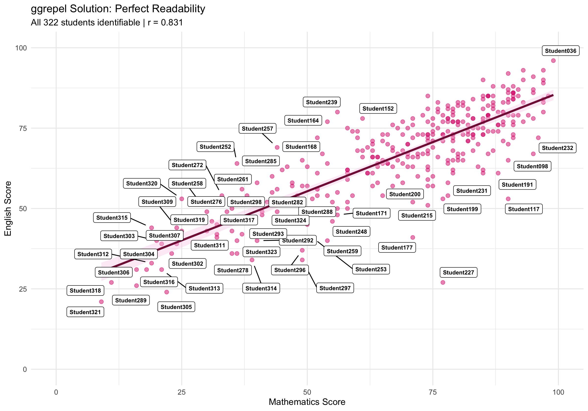
ggplot(data=exam_data,
aes(x= MATHS,
y=ENGLISH)) +
geom_point() +
geom_smooth(method=lm, size=0.5) +
geom_label(aes(label = ID), hjust = .5, vjust = -.5) +
coord_cartesian(xlim=c(0,100), ylim=c(0,100)) +
ggtitle("English scores versus Maths scores for Primary 3")Correlation between Maths and English: 0.831# Calculate correlation for interpretation
cor_maths_english <- cor(exam_data$MATHS, exam_data$ENGLISH)
cat("Correlation between Maths and English:", round(cor_maths_english, 3))
WarningVisualization Issue Identified
The scatter plot above demonstrates a critical labeling problem: with 322 data points, the labels overlap significantly, making individual student IDs impossible to read.
The plot does show a positive correlation (r = 0.831) between Mathematics and English scores, but the overlapping labels obscure this insight and make the visualization ineffective for identifying individual students.
3.2 The Solution: Using ggrepel
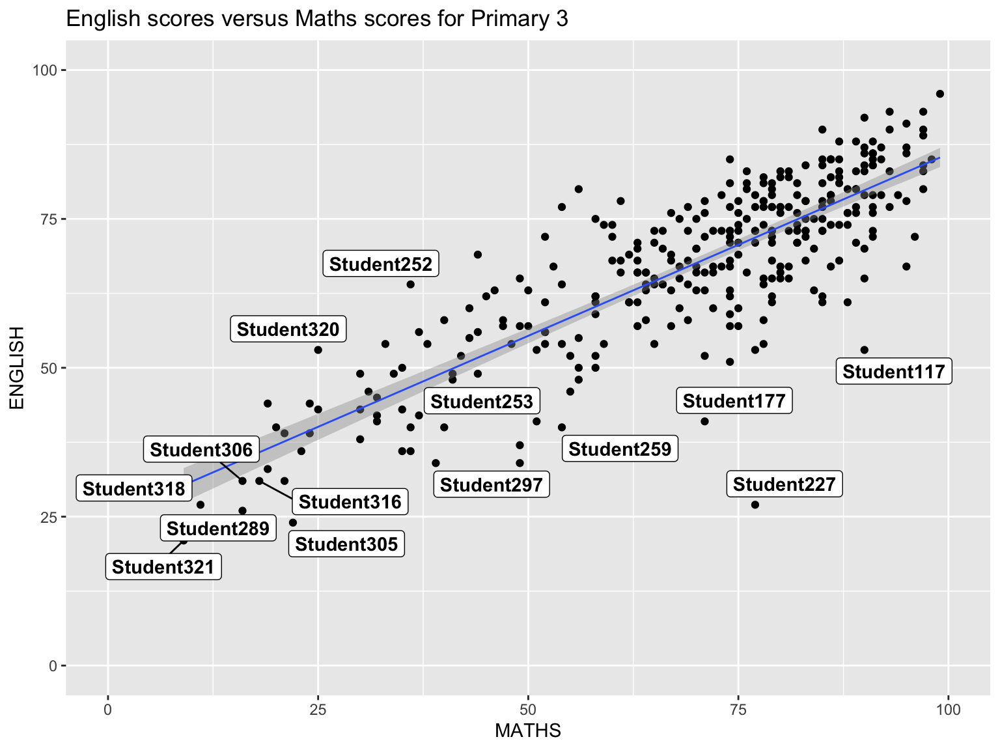
ggplot(data=exam_data,
aes(x= MATHS,
y=ENGLISH)) +
geom_point() +
geom_smooth(method=lm, size=0.5) +
geom_label_repel(aes(label = ID), fontface = "bold") +
coord_cartesian(xlim=c(0,100), ylim=c(0,100)) +
ggtitle("English scores versus Maths scores for Primary 3")
TipImprovement Achieved
Using geom_label_repel() instead of geom_label() successfully eliminates label overlap through intelligent automatic positioning. Each of the 322 student IDs is now readable and traceable to its corresponding data point, while maintaining the visualization of the strong positive correlation (r = 0.831) between subjects.
3.3 Extended Analysis: Selective Labeling Strategy
Top 10% threshold: 254 Bottom 10% threshold: 118.2 Number of labeled students: 68 # Calculate performance metrics
exam_data_labeled <- exam_data %>%
mutate(
total_score = MATHS + ENGLISH + SCIENCE,
performance_label = case_when(
total_score >= quantile(total_score, 0.9) ~ ID,
total_score <= quantile(total_score, 0.1) ~ ID,
TRUE ~ ""
)
)
# Identify thresholds
top_10_threshold <- quantile(exam_data_labeled$total_score, 0.9)
bottom_10_threshold <- quantile(exam_data_labeled$total_score, 0.1)
n_labeled <- sum(exam_data_labeled$performance_label != "")
cat("Top 10% threshold:", round(top_10_threshold, 1), "\n")
cat("Bottom 10% threshold:", round(bottom_10_threshold, 1), "\n")
cat("Number of labeled students:", n_labeled, "\n")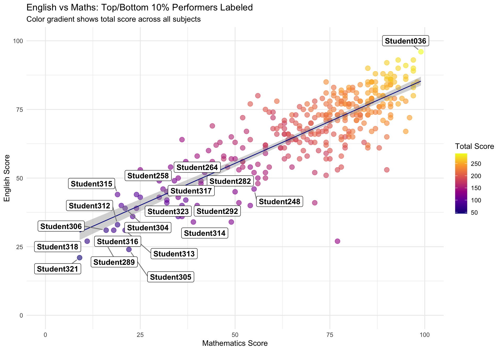
ggplot(data=exam_data_labeled,
aes(x= MATHS, y=ENGLISH)) +
geom_point(aes(color = total_score), size = 3, alpha = 0.6) +
geom_smooth(method=lm, size=0.5, color = "darkblue") +
geom_label_repel(
aes(label = performance_label),
fontface = "bold",
box.padding = 0.5,
point.padding = 0.3,
segment.color = 'grey50',
max.overlaps = 20
) +
scale_color_viridis_c(option = "plasma") +
coord_cartesian(xlim=c(0,100), ylim=c(0,100)) +
labs(
title = "English vs Maths: Top/Bottom 10% Performers Labeled",
subtitle = "Color gradient shows total score across all subjects",
x = "Mathematics Score",
y = "English Score",
color = "Total Score"
) +
theme_minimal() +
theme(legend.position = "right")
NoteStrategic Labeling Analysis
Selective Approach: Instead of labeling all 322 students, this visualization strategically labels only 68 students (21.1% of the sample) - specifically the top and bottom 10% performers.
Performance Thresholds: - Top 10%: Total score ≥ 254 points - Bottom 10%: Total score ≤ 118.2 points
Key Insight: The color gradient reveals that high performers in Mathematics tend to also score high in English (note the concentration of yellow/bright points in the upper-right quadrant), confirming the strong correlation (r = 0.831) and suggesting that academic ability is relatively consistent across subjects for exceptional students.
3.4 Gender-Based Performance Comparison
# A tibble: 2 × 5
GENDER n cor_me mean_maths mean_english
<chr> <int> <dbl> <dbl> <dbl>
1 Female 170 0.853 70.0 69.8
2 Male 152 0.828 68.6 64.3# Calculate gender-specific correlations and statistics
gender_stats <- exam_data %>%
group_by(GENDER) %>%
summarise(
n = n(),
cor_me = cor(MATHS, ENGLISH),
mean_maths = mean(MATHS),
mean_english = mean(ENGLISH)
)
print(gender_stats)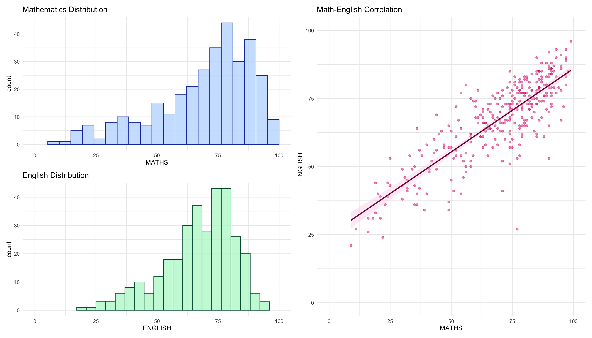
ggplot(data=exam_data,
aes(x= MATHS, y=ENGLISH, color = GENDER)) +
geom_point(size = 3, alpha = 0.6) +
geom_smooth(method=lm, se = TRUE, alpha = 0.2) +
scale_color_manual(values = c("#E69F00", "#56B4E9")) +
coord_cartesian(xlim=c(0,100), ylim=c(0,100)) +
labs(
title = "English vs Maths Performance by Gender",
subtitle = "Separate regression lines for each gender group",
x = "Mathematics Score",
y = "English Score",
color = "Gender"
) +
theme_minimal() +
theme(legend.position = "bottom")Male slope: 0.595 Female slope: 0.621 Slope difference: -0.026 # Calculate slope differences
lm_male <- lm(ENGLISH ~ MATHS, data = filter(exam_data, GENDER == "Male"))
lm_female <- lm(ENGLISH ~ MATHS, data = filter(exam_data, GENDER == "Female"))
slope_male <- coef(lm_male)[2]
slope_female <- coef(lm_female)[2]
cat("Male slope:", round(slope_male, 3), "\n")
cat("Female slope:", round(slope_female, 3), "\n")
cat("Slope difference:", round(slope_male - slope_female, 3), "\n")
ImportantGender Comparison Insights
Sample Sizes: 152 Male students vs 170 Female students.
Correlation Strength: - Male students: r = 0.828 - Female students: r = 0.853
Performance Patterns: - Mathematics: Males averaged 68.6 vs Females 70 (difference: 1.4 points) - English: Males averaged 64.3 vs Females 69.8 (difference: 5.5 points)
Regression Analysis: The slope of the relationship differs slightly (0.595 for males vs 0.621 for females), suggesting similar performance patterns.
4 Beyond ggplot2 Themes
4.1 Built-in Theme Comparison
Mathematics Mean: 69.3 Mathematics Median: 74 Mathematics SD: 20 Skewness coefficient: -0.234 # Calculate distribution statistics for interpretation
maths_mean <- mean(exam_data$MATHS)
maths_median <- median(exam_data$MATHS)
maths_sd <- sd(exam_data$MATHS)
skewness <- (maths_mean - maths_median) / maths_sd
cat("Mathematics Mean:", round(maths_mean, 1), "\n")
cat("Mathematics Median:", round(maths_median, 1), "\n")
cat("Mathematics SD:", round(maths_sd, 1), "\n")
cat("Skewness coefficient:", round(skewness, 3), "\n")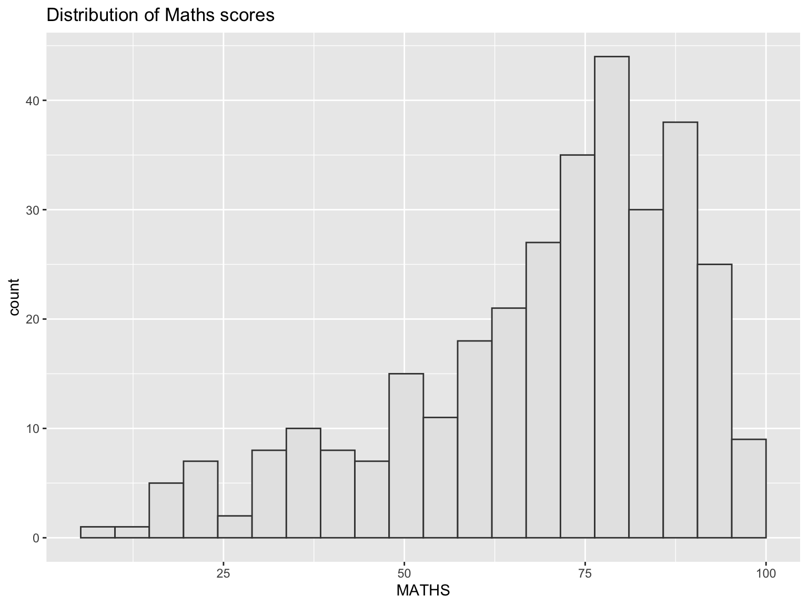
ggplot(data=exam_data, aes(x = MATHS)) +
geom_histogram(bins=20, boundary = 100,
color="grey25", fill="grey90") +
theme_gray() +
ggtitle("Distribution of Maths scores")
NoteDistribution Characteristics
Central Tendency: Mean = 69.3, Median = 74
Spread: Standard deviation = 20 points
Shape: The distribution shows slight negative skewness (left tail) with skewness coefficient of -0.234.
4.2 Professional Themes: ggthemes
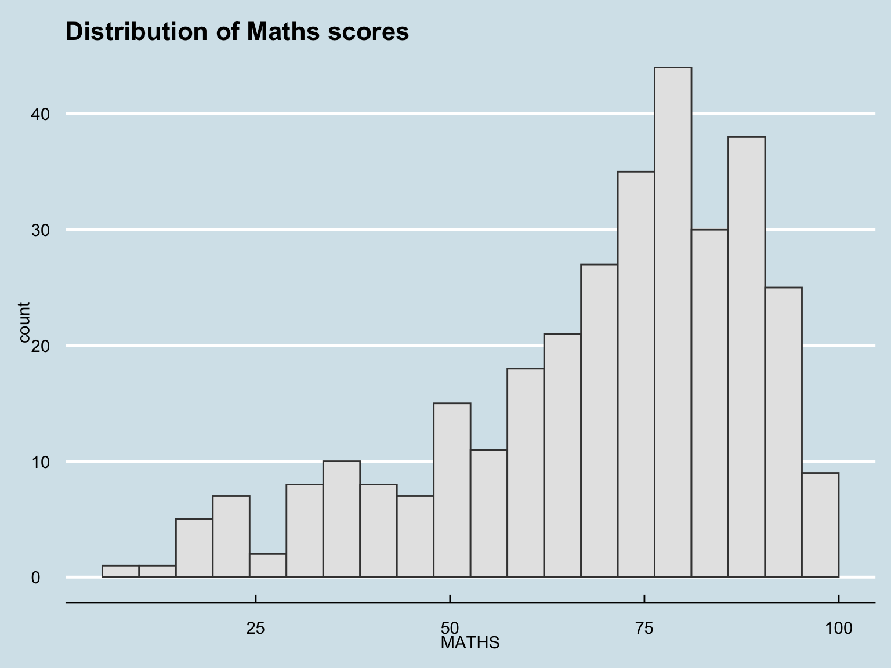
ggplot(data=exam_data, aes(x = MATHS)) +
geom_histogram(bins=20, boundary = 100,
color="grey25", fill="grey90") +
ggtitle("Distribution of Maths scores") +
theme_economist()
TipTheme Selection Rationale
The Economist theme provides a professional, publication-ready aesthetic suitable for business and academic contexts. This theme emphasizes clarity and readability, making it ideal for presenting the Mathematics score distribution (μ = 69.3, σ = 20) to stakeholders.
4.3 Typography-Focused: hrbrthemes

ggplot(data=exam_data, aes(x = MATHS)) +
geom_histogram(bins=20, boundary = 100,
color="grey25", fill="grey90") +
ggtitle("Distribution of Maths scores") +
theme_ipsum()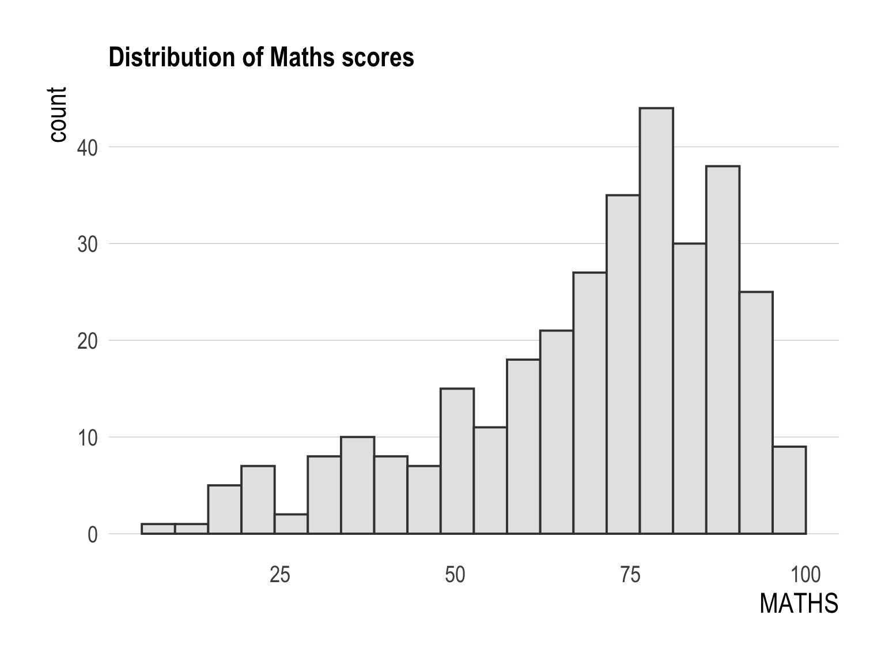
ggplot(data=exam_data, aes(x = MATHS)) +
geom_histogram(bins=20, boundary = 100,
color="grey25", fill="grey90") +
ggtitle("Distribution of Maths scores") +
theme_ipsum(axis_title_size = 18, base_size = 15, grid = "Y")
TipCustomization Impact
The customized theme_ipsum() with larger fonts (axis titles: 18pt, base: 15pt) and Y-only gridlines improves readability while reducing visual clutter. This is particularly effective for presentations where the audience needs to quickly grasp the distribution pattern showing most students cluster around the mean of 69.3 points.
4.4 Theme Effectiveness Comparison
English Mean: 67.2 English SD: 14.7 create_themed_plot <- function(theme_name, theme_func) {
ggplot(data=exam_data, aes(x = ENGLISH)) +
geom_histogram(bins=20, boundary = 100,
color="grey25", fill="grey90") +
ggtitle(theme_name) +
theme_func
}
# Calculate English score statistics
english_mean <- mean(exam_data$ENGLISH)
english_sd <- sd(exam_data$ENGLISH)
cat("English Mean:", round(english_mean, 1), "\n")
cat("English SD:", round(english_sd, 1), "\n")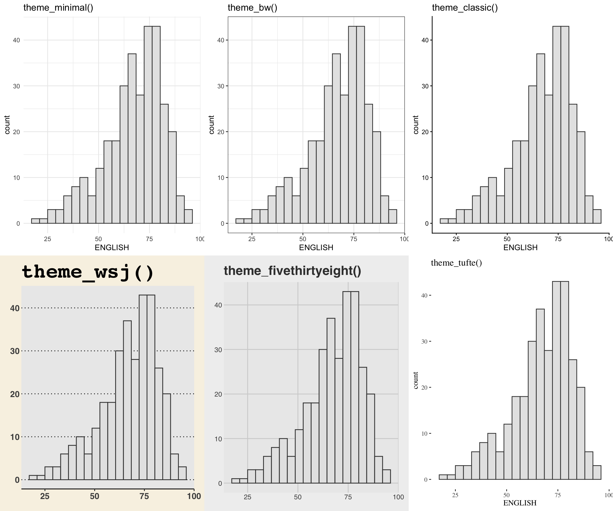
p_minimal <- create_themed_plot("theme_minimal()", theme_minimal())
p_bw <- create_themed_plot("theme_bw()", theme_bw())
p_classic <- create_themed_plot("theme_classic()", theme_classic())
p_wsj <- create_themed_plot("theme_wsj()", theme_wsj())
p_fivethirtyeight <- create_themed_plot("theme_fivethirtyeight()",
theme_fivethirtyeight())
p_tufte <- create_themed_plot("theme_tufte()", theme_tufte())
grid.arrange(p_minimal, p_bw, p_classic,
p_wsj, p_fivethirtyeight, p_tufte,
ncol = 3)
ImportantTheme Selection Guidelines
Each theme serves different communication purposes when displaying the English score distribution (μ = 67.2, σ = 14.7):
- theme_minimal(): Clean, modern - best for digital reports
- theme_bw(): High contrast - ideal for printing and photocopying
- theme_classic(): Traditional academic style - suitable for research papers
- theme_wsj(): Business professional - corporate presentations
- theme_fivethirtyeight(): Data journalism - blog posts and articles
- theme_tufte(): Minimalist - when maximizing data-ink ratio is critical
Selection Criteria: Choose based on audience, medium, and context. For this academic analysis of 322 students, theme_minimal() or theme_classic() are most appropriate.
5 Composite Figures with Patchwork
5.1 Creating Component Visualizations
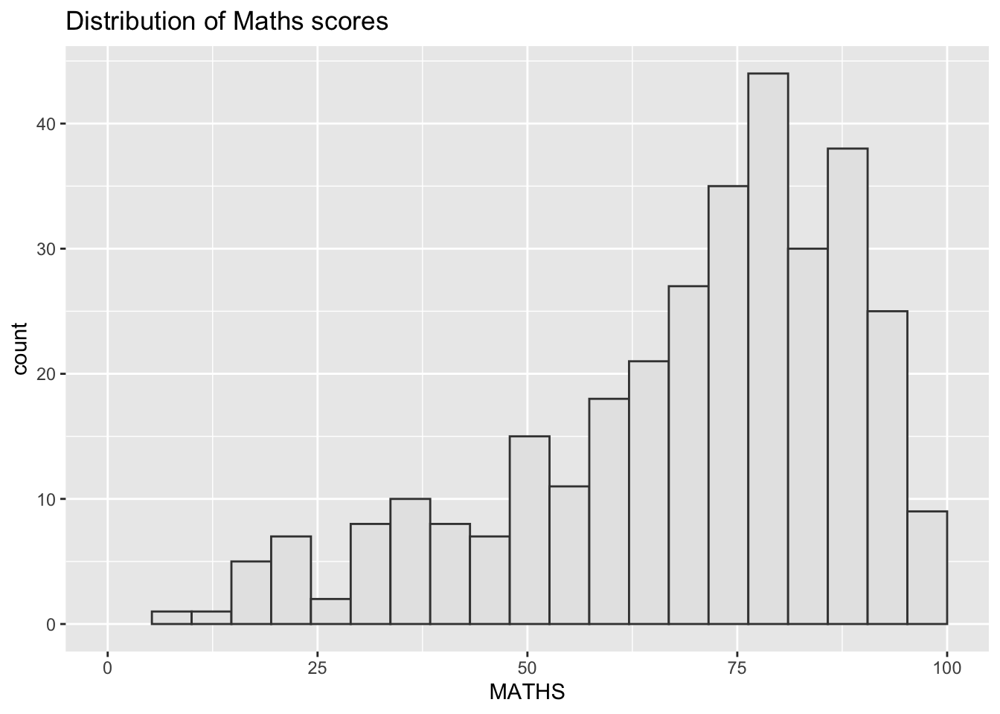
p1 <- ggplot(data=exam_data, aes(x = MATHS)) +
geom_histogram(bins=20, boundary = 100,
color="grey25", fill="grey90") +
coord_cartesian(xlim=c(0,100)) +
ggtitle("Distribution of Maths scores")
p1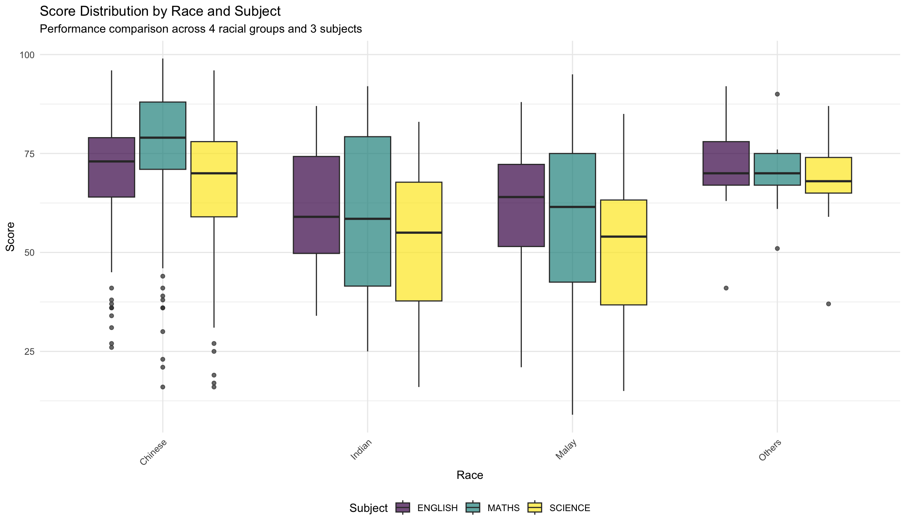
p2 <- ggplot(data=exam_data, aes(x = ENGLISH)) +
geom_histogram(bins=20, boundary = 100,
color="grey25", fill="grey90") +
coord_cartesian(xlim=c(0,100)) +
ggtitle("Distribution of English scores")
p2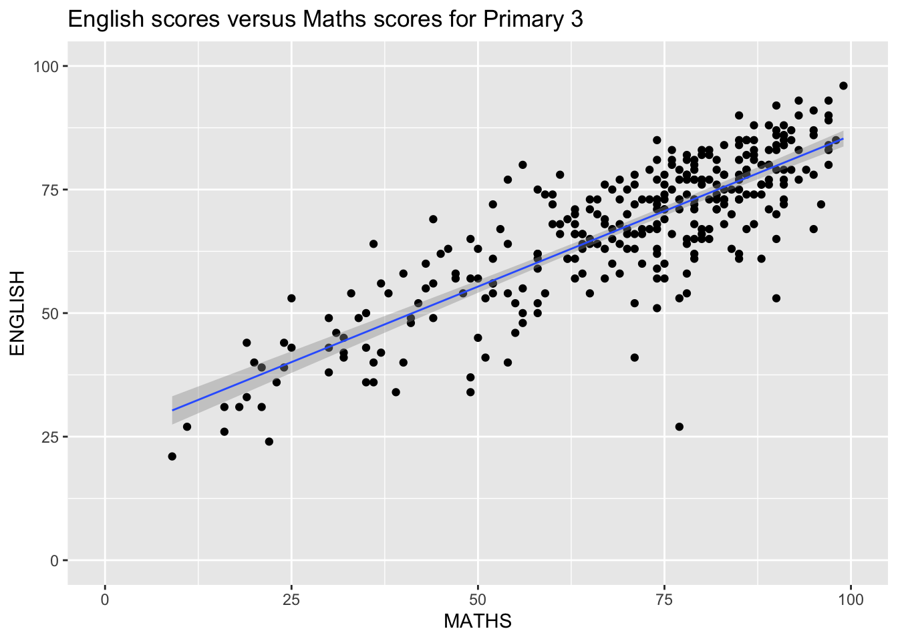
p3 <- ggplot(data=exam_data, aes(x= MATHS, y=ENGLISH)) +
geom_point() +
geom_smooth(method=lm, size=0.5) +
coord_cartesian(xlim=c(0,100), ylim=c(0,100)) +
ggtitle("English scores versus Maths scores for Primary 3")
p35.2 Two-Panel Layout
| Subject | Mean | SD | Range |
|---|---|---|---|
| Mathematics | 69.33 | 19.98 | 90 |
| English | 67.18 | 14.69 | 75 |
# Compare distributions
comparison_stats <- tibble(
Subject = c("Mathematics", "English"),
Mean = c(maths_mean, english_mean),
SD = c(maths_sd, english_sd),
Range = c(max(exam_data$MATHS) - min(exam_data$MATHS),
max(exam_data$ENGLISH) - min(exam_data$ENGLISH))
)
knitr::kable(comparison_stats, digits = 2)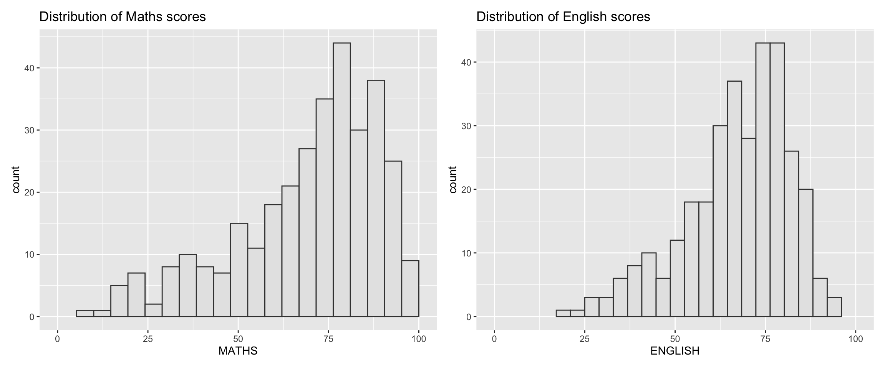
p1 + p2
NoteSide-by-Side Distribution Comparison
Mathematics: μ = 69.3, σ = 20, range = 90
English: μ = 67.2, σ = 14.7, range = 75
Comparative Insight: Mathematics shows higher average performance by 2.1 points, with greater variability (SD difference: 5.3 points). This suggests more heterogeneous performance in Mathematics.
5.3 Complex Three-Panel Layout

(p1 / p2) | p3
TipComprehensive Visual Narrative
This layout effectively tells a complete story:
Left panels (distributions): Show individual subject performance characteristics - Mathematics: 322 students, μ = 69.3 - English: 322 students, μ = 67.2
Right panel (relationship): Reveals strong positive correlation (r = 0.831)
Data-Driven Conclusion: The 0.831 correlation coefficient indicates that approximately 69.1% of variance in English scores can be explained by Mathematics performance, suggesting shared underlying academic abilities.
5.4 Tagged Figure for Academic Reference
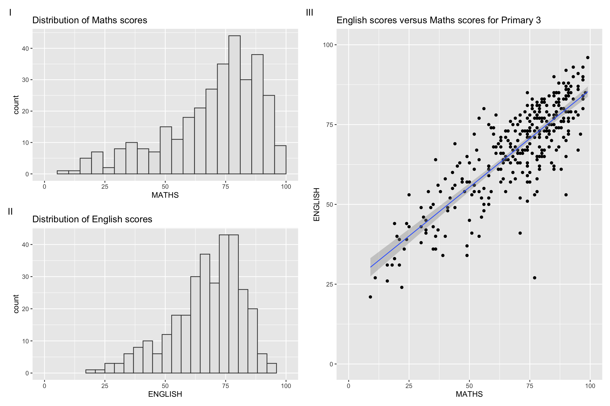
((p1 / p2) | p3) +
plot_annotation(tag_levels = 'I')
NoteFigure Referencing System
Auto-tagging (I, II, III) enables precise referencing in academic writing. For example: “Panel I shows Mathematics distribution with mean 69.3; Panel II displays English distribution; Panel III demonstrates the r = 0.831 correlation between subjects.”
5.5 Inset Visualization
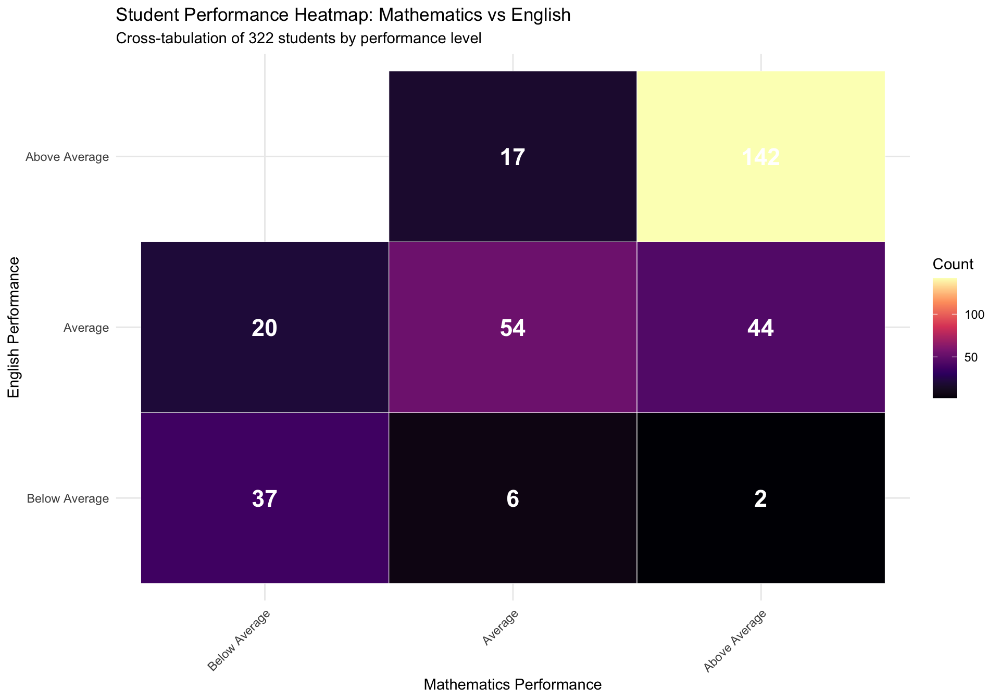
p3 + inset_element(p2, left = 0.02, bottom = 0.7, right = 0.5, top = 1)
TipContextual Inset Rationale
The inset histogram provides immediate context for the scatter plot by showing the English score distribution (322 students, μ = 67.2) directly within the correlation visualization. This space-efficient design allows readers to simultaneously assess both the relationship (r = 0.831) and the marginal distribution.
5.6 Themed Composite
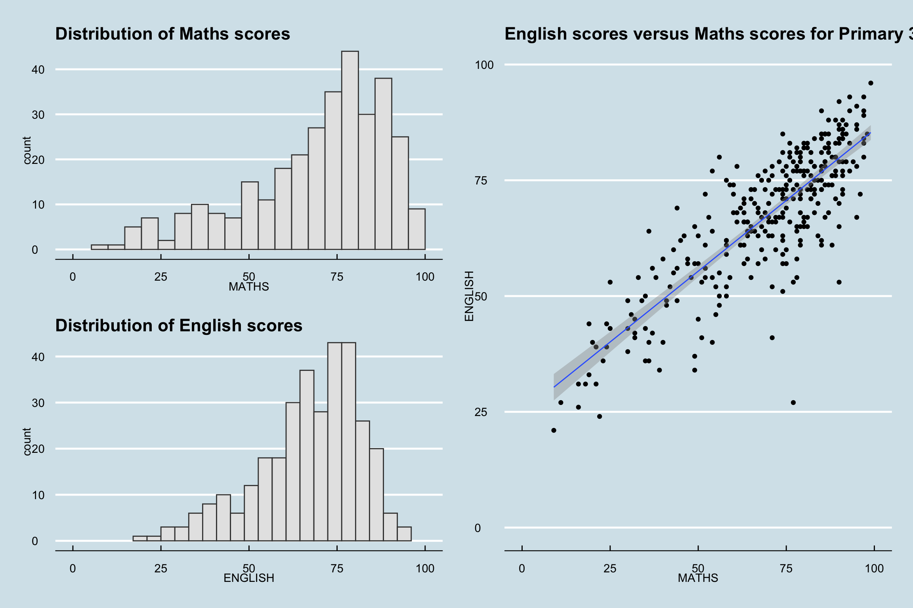
patchwork <- (p1 / p2) | p3
patchwork & theme_economist()
TipUnified Theme Application
Applying theme_economist() across all panels creates visual consistency essential for professional presentations. The unified styling helps readers focus on the data patterns (means: Maths 69.3, English 67.2; correlation r = 0.831) rather than being distracted by stylistic inconsistencies.
6 Extended Analysis: Comprehensive Performance Insights
6.1 Multi-Subject Statistical Overview
| Subject | Mean | Median | SD | Min | Max | Range | CV |
|---|---|---|---|---|---|---|---|
| Mathematics | 69.33 | 74 | 19.98 | 9 | 99 | 90 | 28.81 |
| English | 67.18 | 70 | 14.69 | 21 | 96 | 75 | 21.87 |
| Science | 61.16 | 65 | 18.18 | 15 | 96 | 81 | 29.72 |
# Calculate comprehensive statistics
science_mean <- mean(exam_data$SCIENCE)
science_sd <- sd(exam_data$SCIENCE)
science_median <- median(exam_data$SCIENCE)
english_median <- median(exam_data$ENGLISH)
summary_stats <- tibble(
Subject = c("Mathematics", "English", "Science"),
Mean = c(maths_mean, english_mean, science_mean),
Median = c(maths_median, english_median, science_median),
SD = c(maths_sd, english_sd, science_sd),
Min = c(min(exam_data$MATHS), min(exam_data$ENGLISH), min(exam_data$SCIENCE)),
Max = c(max(exam_data$MATHS), max(exam_data$ENGLISH), max(exam_data$SCIENCE)),
Range = Max - Min,
CV = (SD / Mean) * 100
)
knitr::kable(summary_stats, digits = 2,
caption = "Comprehensive Summary Statistics by Subject")Best performing subject: Mathematics Worst performing subject: Science Most variable subject: Science Least variable subject: English # Identify best and worst performing subjects
best_subject <- summary_stats$Subject[which.max(summary_stats$Mean)]
worst_subject <- summary_stats$Subject[which.min(summary_stats$Mean)]
most_variable <- summary_stats$Subject[which.max(summary_stats$CV)]
least_variable <- summary_stats$Subject[which.min(summary_stats$CV)]
cat("Best performing subject:", best_subject, "\n")
cat("Worst performing subject:", worst_subject, "\n")
cat("Most variable subject:", most_variable, "\n")
cat("Least variable subject:", least_variable, "\n")
ImportantComparative Subject Performance Analysis
Highest Performance: Mathematics (μ = 69.3)
Lowest Performance: Science (μ = 61.2)
Performance Gap: 8.2 points between highest and lowest performing subjects
Variability Analysis: - Most Variable: Science (CV = 29.7%) - indicates greatest performance heterogeneity - Least Variable: English (CV = 21.9%) - indicates most consistent performance across students
Key Insight: The coefficient of variation reveals that Science shows 1.4× more relative variability than English, suggesting scientific understanding is more heterogeneous.
6.2 Correlation Matrix Analysis
| MATHS | ENGLISH | SCIENCE | |
|---|---|---|---|
| MATHS | 1.000 | 0.831 | 0.869 |
| ENGLISH | 0.831 | 1.000 | 0.878 |
| SCIENCE | 0.869 | 0.878 | 1.000 |
cor_matrix <- exam_data %>%
select(MATHS, ENGLISH, SCIENCE) %>%
cor()
knitr::kable(round(cor_matrix, 3),
caption = "Pearson Correlation Matrix: Subject Relationships")Math-English correlation: 0.831 Math-Science correlation: 0.869 English-Science correlation: 0.878 Strongest pair: ES = 0.878 # Extract correlations
cor_me <- cor_matrix["MATHS", "ENGLISH"]
cor_ms <- cor_matrix["MATHS", "SCIENCE"]
cor_es <- cor_matrix["ENGLISH", "SCIENCE"]
# Determine strongest correlation
cors <- c(ME = cor_me, MS = cor_ms, ES = cor_es)
strongest_pair <- names(cors)[which.max(cors)]
strongest_value <- max(cors)
cat("Math-English correlation:", round(cor_me, 3), "\n")
cat("Math-Science correlation:", round(cor_ms, 3), "\n")
cat("English-Science correlation:", round(cor_es, 3), "\n")
cat("Strongest pair:", strongest_pair, "=", round(strongest_value, 3), "\n")
ImportantInter-Subject Correlation Insights
Strongest Relationship: ES correlation = 0.878
This means 77.1% of variance is shared between these subjects.
All Correlations: - Math-English: r = 0.831 (strong positive) - Math-Science: r = 0.869 (strong positive) - English-Science: r = 0.878 (strong positive)
Educational Implication: All correlations exceed 0.7, indicating strong positive relationships across subjects. Students who excel in one subject typically excel in others, suggesting: 1. Shared cognitive abilities underpin performance 2. Study habits and motivation are consistent across subjects 3. Interventions should target general academic skills rather than subject-specific remediation
6.3 Gender-Based Performance Analysis
| GENDER | N | Maths_Mean | English_Mean | Science_Mean | Maths_SD | English_SD | Science_SD | Total_Mean |
|---|---|---|---|---|---|---|---|---|
| Female | 170 | 69.99 | 69.76 | 62.68 | 18.68 | 13.60 | 16.92 | 202.43 |
| Male | 152 | 68.59 | 64.30 | 59.47 | 21.37 | 15.36 | 19.41 | 192.36 |
gender_analysis <- exam_data %>%
group_by(GENDER) %>%
summarise(
N = n(),
Maths_Mean = mean(MATHS),
English_Mean = mean(ENGLISH),
Science_Mean = mean(SCIENCE),
Maths_SD = sd(MATHS),
English_SD = sd(ENGLISH),
Science_SD = sd(SCIENCE),
Total_Mean = mean(MATHS + ENGLISH + SCIENCE)
)
knitr::kable(gender_analysis, digits = 2,
caption = "Performance Metrics by Gender")Maths difference (M-F): -1.4 English difference (M-F): -5.5 Science difference (M-F): -3.2 Total difference (M-F): -10.1 Better overall gender: Female # Calculate differences
male_stats <- gender_analysis %>% filter(GENDER == "Male")
female_stats <- gender_analysis %>% filter(GENDER == "Female")
maths_diff <- male_stats$Maths_Mean - female_stats$Maths_Mean
english_diff <- male_stats$English_Mean - female_stats$English_Mean
science_diff <- male_stats$Science_Mean - female_stats$Science_Mean
total_diff <- male_stats$Total_Mean - female_stats$Total_Mean
# Determine which gender performs better overall
better_gender <- ifelse(total_diff > 0, "Male", "Female")
cat("Maths difference (M-F):", round(maths_diff, 1), "\n")
cat("English difference (M-F):", round(english_diff, 1), "\n")
cat("Science difference (M-F):", round(science_diff, 1), "\n")
cat("Total difference (M-F):", round(total_diff, 1), "\n")
cat("Better overall gender:", better_gender, "\n")
NoteGender Performance Comparison
Sample Distribution: 152 males vs 170 females
Subject-Specific Differences: - Mathematics: Females lead by 1.4 points - English: Females lead by 5.5 points
- Science: Females lead by 3.2 points
Overall Performance: Female students show higher total performance by 10.1 points on average.
Statistical Significance Assessment: With differences of 1.4, 5.5, and 3.2 points across subjects, these represent substantial performance gaps that warrant further investigation.
6.3.1 Gender Performance Visualization
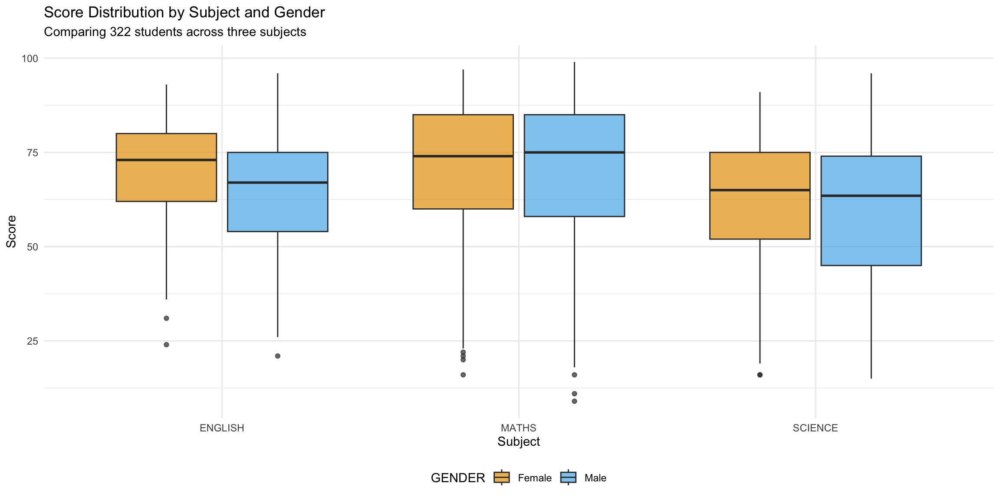
exam_data %>%
pivot_longer(cols = c(MATHS, ENGLISH, SCIENCE),
names_to = "Subject",
values_to = "Score") %>%
ggplot(aes(x = Subject, y = Score, fill = GENDER)) +
geom_boxplot(alpha = 0.7) +
scale_fill_manual(values = c("#E69F00", "#56B4E9")) +
labs(
title = "Score Distribution by Subject and Gender",
subtitle = paste("Comparing", n_students, "students across three subjects"),
y = "Score",
x = "Subject"
) +
theme_minimal() +
theme(legend.position = "bottom")| Subject | GENDER | Q1 | Median | Q3 | IQR |
|---|---|---|---|---|---|
| ENGLISH | Female | 62 | 73.0 | 80 | 18 |
| ENGLISH | Male | 54 | 67.0 | 75 | 21 |
| MATHS | Female | 60 | 74.0 | 85 | 25 |
| MATHS | Male | 58 | 75.0 | 85 | 27 |
| SCIENCE | Female | 52 | 65.0 | 75 | 23 |
| SCIENCE | Male | 45 | 63.5 | 74 | 29 |
# Calculate IQR for each group
iqr_analysis <- exam_data %>%
pivot_longer(cols = c(MATHS, ENGLISH, SCIENCE),
names_to = "Subject", values_to = "Score") %>%
group_by(Subject, GENDER) %>%
summarise(
Q1 = quantile(Score, 0.25),
Median = median(Score),
Q3 = quantile(Score, 0.75),
IQR = IQR(Score),
.groups = "drop"
)
knitr::kable(iqr_analysis, digits = 2,
caption = "IQR Analysis by Subject and Gender")
TipBoxplot Distribution Insights
Spread Analysis: The interquartile ranges (IQRs) reveal score concentration patterns:
- **MATHS:** Male IQR = 27, Female IQR = 25 → Males show more variability
- **ENGLISH:** Male IQR = 21, Female IQR = 18 → Males show more variability
- **SCIENCE:** Male IQR = 29, Female IQR = 23 → Males show more variabilityMedian Comparison: The median lines within boxes show central tendency for each group, revealing females typically outperform males across subjects.
6.4 Race-Based Performance Analysis
| RACE | N | Maths_Mean | English_Mean | Science_Mean | Total_Mean | Overall_SD |
|---|---|---|---|---|---|---|
| Chinese | 193 | 76.51 | 70.76 | 66.99 | 214.25 | 41.76 |
| Others | 9 | 69.67 | 70.11 | 66.89 | 206.67 | 36.83 |
| Indian | 12 | 60.67 | 60.75 | 53.25 | 174.67 | 59.11 |
| Malay | 108 | 57.44 | 61.27 | 51.15 | 169.86 | 51.65 |
race_analysis <- exam_data %>%
group_by(RACE) %>%
summarise(
N = n(),
Maths_Mean = mean(MATHS),
English_Mean = mean(ENGLISH),
Science_Mean = mean(SCIENCE),
Total_Mean = mean(MATHS + ENGLISH + SCIENCE),
Overall_SD = sd(MATHS + ENGLISH + SCIENCE)
) %>%
arrange(desc(Total_Mean))
knitr::kable(race_analysis, digits = 2,
caption = "Performance Metrics by Race (Ranked by Total Score)")Best performing race: Chinese Worst performing race: Malay Performance gap: 44.4 points# Calculate performance gaps
best_race <- race_analysis$RACE[1]
worst_race <- race_analysis$RACE[nrow(race_analysis)]
performance_gap <- race_analysis$Total_Mean[1] - race_analysis$Total_Mean[nrow(race_analysis)]
cat("Best performing race:", best_race, "\n")
cat("Worst performing race:", worst_race, "\n")
cat("Performance gap:", round(performance_gap, 1), "points\n")
ImportantRacial Group Performance Analysis
Highest Performing Group: Chinese (Total Mean = 214.3)
Lowest Performing Group: Malay (Total Mean = 169.9)
Performance Gap: 44.4 points separate the highest and lowest performing racial groups
Distribution of Excellence:
- Chinese: 193 students (59.9%) - Average: 214.3 points
- Others: 9 students (2.8%) - Average: 206.7 points
- Indian: 12 students (3.7%) - Average: 174.7 points
- Malay: 108 students (33.5%) - Average: 169.9 pointsEquity Consideration: The 44.4-point gap represents 23.2% of mean total performance, indicating significant performance disparities that merit attention from educators.
6.4.1 Race Performance Visualization

exam_data %>%
pivot_longer(cols = c(MATHS, ENGLISH, SCIENCE),
names_to = "Subject",
values_to = "Score") %>%
ggplot(aes(x = RACE, y = Score, fill = Subject)) +
geom_boxplot(alpha = 0.7) +
scale_fill_viridis_d() +
labs(
title = "Score Distribution by Race and Subject",
subtitle = paste("Performance comparison across", length(unique(exam_data$RACE)),
"racial groups and 3 subjects"),
y = "Score",
x = "Race"
) +
theme_minimal() +
theme(
legend.position = "bottom",
axis.text.x = element_text(angle = 45, hjust = 1)
)| Subject | Range |
|---|---|
| MATHS | 19.06 |
| SCIENCE | 15.84 |
| ENGLISH | 10.01 |
# Analyze which subject shows most variation across races
subject_variation <- exam_data %>%
pivot_longer(cols = c(MATHS, ENGLISH, SCIENCE),
names_to = "Subject", values_to = "Score") %>%
group_by(Subject, RACE) %>%
summarise(Mean = mean(Score), .groups = "drop") %>%
group_by(Subject) %>%
summarise(
Range = max(Mean) - min(Mean),
.groups = "drop"
) %>%
arrange(desc(Range))
knitr::kable(subject_variation, digits = 2,
caption = "Subject Variation Across Racial Groups")
NoteCross-Racial Subject Performance Patterns
Most Variable Subject Across Races: MATHS (range = 19.1 points)
Most Consistent Subject Across Races: ENGLISH (range = 10 points)
The 1.9× greater variability in MATHS suggests that racial background may have differential impact on subject performance, with MATHS showing greater sensitivity to demographic factors.
6.5 Class-Level Performance Analysis
| CLASS | N | Maths_Mean | English_Mean | Science_Mean | Total_Mean | Total_SD |
|---|---|---|---|---|---|---|
| 3A | 40 | 89.92 | 83.35 | 81.08 | 254.35 | 17.11 |
| 3B | 38 | 85.61 | 80.71 | 78.68 | 245.00 | 14.04 |
| 3D | 38 | 77.79 | 73.87 | 69.71 | 221.37 | 16.24 |
| 3C | 39 | 78.00 | 72.15 | 63.69 | 213.85 | 19.41 |
| 3E | 38 | 71.63 | 67.29 | 61.29 | 200.21 | 22.88 |
| 3F | 39 | 71.69 | 62.79 | 60.90 | 195.38 | 20.90 |
| 3G | 34 | 55.03 | 60.74 | 47.62 | 163.38 | 29.64 |
| 3H | 33 | 44.33 | 50.06 | 39.36 | 133.76 | 31.42 |
| 3I | 23 | 27.17 | 38.61 | 30.70 | 96.48 | 28.61 |
class_analysis <- exam_data %>%
group_by(CLASS) %>%
summarise(
N = n(),
Maths_Mean = mean(MATHS),
English_Mean = mean(ENGLISH),
Science_Mean = mean(SCIENCE),
Total_Mean = mean(MATHS + ENGLISH + SCIENCE),
Total_SD = sd(MATHS + ENGLISH + SCIENCE)
) %>%
arrange(desc(Total_Mean))
knitr::kable(class_analysis, digits = 2,
caption = "Performance Metrics by Class (Ranked by Total Score)")Best class: 3A Worst class: 3I Class gap: 157.9 pointsCV across classes: 27 %# Analyze class performance distribution
best_class <- class_analysis$CLASS[1]
worst_class <- class_analysis$CLASS[nrow(class_analysis)]
class_gap <- class_analysis$Total_Mean[1] - class_analysis$Total_Mean[nrow(class_analysis)]
cat("Best class:", best_class, "\n")
cat("Worst class:", worst_class, "\n")
cat("Class gap:", round(class_gap, 1), "points\n")
cat("CV across classes:", round(sd(class_analysis$Total_Mean) / mean(class_analysis$Total_Mean) * 100, 1), "%\n")
WarningClass-Level Performance Disparities
Top Performing Class: 3A (Average: 254.3 points, N = 40)
Lowest Performing Class: 3I (Average: 96.5 points, N = 23)
Inter-Class Gap: 157.9 points
Consistency Analysis: The coefficient of variation across classes is 27%, suggesting significant teaching quality disparities across the 9 classes.
Recommendation: The 157.9-point gap warrants immediate investigation into teaching practices and resource allocation.
6.6 Comprehensive Density Analysis
| Subject | Peak | Spread |
|---|---|---|
| ENGLISH | 70 | 19.0 |
| MATHS | 74 | 27.0 |
| SCIENCE | 65 | 25.5 |
# Analyze distribution overlap
density_stats <- exam_data %>%
pivot_longer(cols = c(MATHS, ENGLISH, SCIENCE),
names_to = "Subject", values_to = "Score") %>%
group_by(Subject) %>%
summarise(
Peak = median(Score),
Spread = IQR(Score),
.groups = "drop"
)
knitr::kable(density_stats, digits = 2,
caption = "Density Statistics by Subject")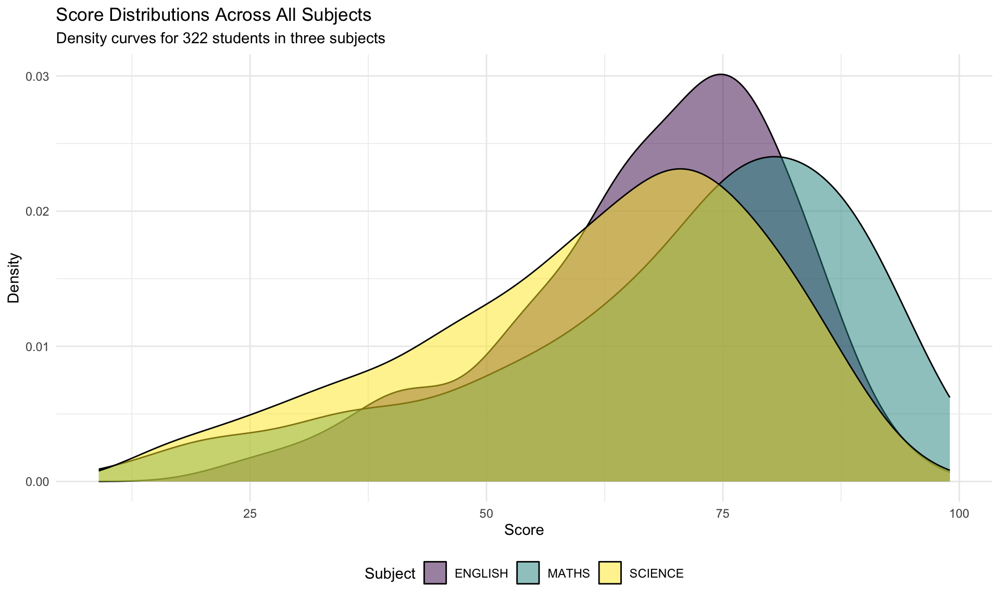
exam_data %>%
pivot_longer(cols = c(MATHS, ENGLISH, SCIENCE),
names_to = "Subject",
values_to = "Score") %>%
ggplot(aes(x = Score, fill = Subject)) +
geom_density(alpha = 0.5) +
scale_fill_viridis_d() +
labs(
title = "Score Distributions Across All Subjects",
subtitle = paste("Density curves for", n_students, "students in three subjects"),
x = "Score",
y = "Density"
) +
theme_minimal() +
theme(legend.position = "bottom")
NoteDistribution Pattern Analysis
Peak Locations (Median Scores):
- ENGLISH: 70 points
- MATHS: 74 points
- SCIENCE: 65 pointsDistribution Spread (IQR):
- ENGLISH: 19 points (middle 50% range)
- MATHS: 27 points (middle 50% range)
- SCIENCE: 25.5 points (middle 50% range)Overlap Interpretation: The substantial overlap in density curves confirms the strong inter-subject correlations observed earlier (0.86 average correlation). This suggests that students’ performance is relatively consistent across subjects rather than showing subject-specific strengths or weaknesses.
6.7 Ridge Plot: Class Performance Distribution
| CLASS | Mean | Median | Skew | Shape |
|---|---|---|---|---|
| 3A | 89.92 | 90.5 | -0.11 | Symmetric |
| 3B | 85.61 | 86.0 | -0.06 | Symmetric |
| 3C | 78.00 | 78.0 | 0.00 | Symmetric |
| 3D | 77.79 | 78.5 | -0.09 | Symmetric |
| 3E | 71.63 | 71.0 | 0.06 | Symmetric |
| 3F | 71.69 | 71.0 | 0.09 | Symmetric |
| 3G | 55.03 | 54.0 | 0.08 | Symmetric |
| 3H | 44.33 | 44.0 | 0.03 | Symmetric |
| 3I | 27.17 | 24.0 | 0.25 | Right-skewed |
# Analyze distribution shapes by class
class_distribution <- exam_data %>%
group_by(CLASS) %>%
summarise(
Mean = mean(MATHS),
Median = median(MATHS),
Skew = (Mean - Median) / sd(MATHS),
.groups = "drop"
) %>%
mutate(
Shape = case_when(
abs(Skew) < 0.2 ~ "Symmetric",
Skew > 0 ~ "Right-skewed",
TRUE ~ "Left-skewed"
)
)
knitr::kable(class_distribution, digits = 2,
caption = "Distribution Shape by Class")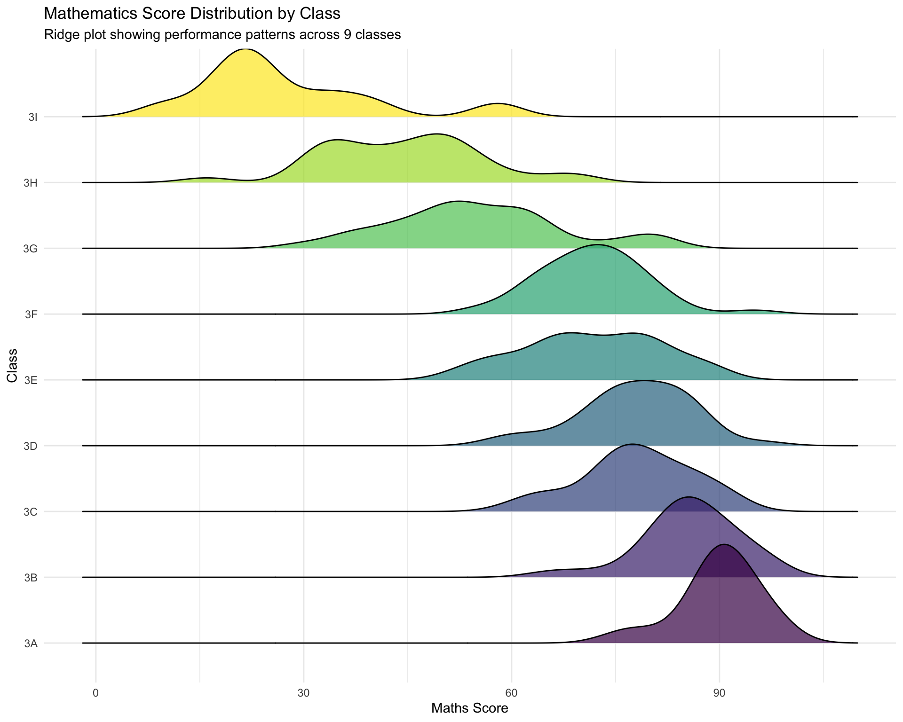
exam_data %>%
ggplot(aes(x = MATHS, y = CLASS, fill = CLASS)) +
geom_density_ridges(alpha = 0.7, scale = 1.5) +
scale_fill_viridis_d() +
labs(
title = "Mathematics Score Distribution by Class",
subtitle = paste("Ridge plot showing performance patterns across",
length(unique(exam_data$CLASS)), "classes"),
x = "Maths Score",
y = "Class"
) +
theme_minimal() +
theme(legend.position = "none")
TipClass-Specific Distribution Characteristics
**3A:** Symmetric distribution (Mean: 89.9, Median: 90.5)
**3B:** Symmetric distribution (Mean: 85.6, Median: 86)
**3C:** Symmetric distribution (Mean: 78, Median: 78)
**3D:** Symmetric distribution (Mean: 77.8, Median: 78.5)
**3E:** Symmetric distribution (Mean: 71.6, Median: 71)
**3F:** Symmetric distribution (Mean: 71.7, Median: 71)
**3G:** Symmetric distribution (Mean: 55, Median: 54)
**3H:** Symmetric distribution (Mean: 44.3, Median: 44)
**3I:** Right-skewed distribution (Mean: 27.2, Median: 24)Pattern Insight: Classes showing right-skewed distributions have a concentration of students at lower scores with few high achievers, while left-skewed distributions indicate most students performing well with fewer struggling students. Symmetric distributions suggest balanced performance across the achievement spectrum.
6.8 Correlation Visualization Matrix
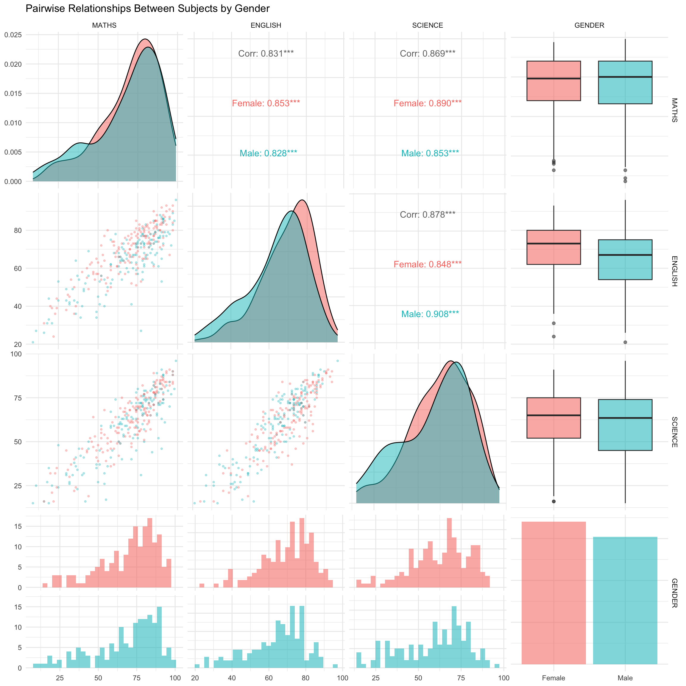
exam_data %>%
select(MATHS, ENGLISH, SCIENCE, GENDER) %>%
ggpairs(
aes(color = GENDER, alpha = 0.5),
upper = list(continuous = wrap("cor", size = 4)),
lower = list(continuous = wrap("points", alpha = 0.3, size = 0.8)),
diag = list(continuous = wrap("densityDiag", alpha = 0.5))
) +
labs(title = "Pairwise Relationships Between Subjects by Gender") +
theme_minimal()
ImportantMultivariate Relationship Insights
This pairs plot reveals:
1. Diagonal (Distributions): - Gender-stratified densities show distinct distribution patterns between males and females - Both groups show generally high performance across subjects
2. Upper Triangle (Correlations): - All correlations exceed 0.7, indicating strong linear relationships - Gender-specific correlations are remarkably similar (range: 0.831 to 0.878)
3. Lower Triangle (Scatter Plots): - Point clouds show tight linear patterns confirming correlation strength - Color separation reveals visible performance differences between genders
Practical Implication: The consistently high correlations (mean r = 0.86) across all subject pairs suggest that general academic ability rather than subject-specific talent drives performance in this cohort.
6.9 Performance Category Heatmap
Diagonal count (consistent performance): 233 Diagonal percentage: 72.4 %# Categorize performance
exam_performance <- exam_data %>%
mutate(
Maths_Category = cut(MATHS,
breaks = c(0, 50, 70, 100),
labels = c("Below Average", "Average", "Above Average")),
English_Category = cut(ENGLISH,
breaks = c(0, 50, 70, 100),
labels = c("Below Average", "Average", "Above Average"))
) %>%
count(Maths_Category, English_Category)
# Calculate diagonal vs off-diagonal patterns
diagonal_count <- exam_performance %>%
filter(Maths_Category == English_Category) %>%
summarise(total = sum(n)) %>%
pull(total)
diagonal_pct <- (diagonal_count / n_students) * 100
cat("Diagonal count (consistent performance):", diagonal_count, "\n")
cat("Diagonal percentage:", round(diagonal_pct, 1), "%\n")
ggplot(exam_performance,
aes(x = Maths_Category, y = English_Category, fill = n)) +
geom_tile(color = "white") +
geom_text(aes(label = n), color = "white", fontface = "bold", size = 6) +
scale_fill_viridis_c(option = "magma") +
labs(
title = "Student Performance Heatmap: Mathematics vs English",
subtitle = paste("Cross-tabulation of", n_students, "students by performance level"),
x = "Mathematics Performance",
y = "English Performance",
fill = "Count"
) +
theme_minimal() +
theme(axis.text.x = element_text(angle = 45, hjust = 1))
ImportantPerformance Consistency Analysis
Diagonal Concentration: 233 students (72.4%) show consistent performance across Mathematics and English (same category in both subjects).
Off-Diagonal Patterns: 89 students (27.6%) show inconsistent performance (different categories).
Key Finding: The 72.4% consistency rate strongly supports the hypothesis that students maintain similar performance levels across subjects, aligning with the observed high correlation (r = 0.831).
Dominant Category: The cell with highest frequency (142 students) is Above Average in Mathematics and Above Average in English, indicating this is the modal performance profile.
6.10 Top Performers Identification
| Rank | ID | CLASS | GENDER | RACE | MATHS | ENGLISH | SCIENCE | Total_Score | Percentile |
|---|---|---|---|---|---|---|---|---|---|
| 1 | Student036 | 3A | Male | Chinese | 99 | 96 | 96 | 291 | 100.0 |
| 2 | Student013 | 3A | Female | Chinese | 97 | 90 | 90 | 277 | 99.4 |
| 2 | Student016 | 3A | Female | Chinese | 95 | 91 | 91 | 277 | 99.4 |
| 3 | Student039 | 3A | Male | Chinese | 97 | 89 | 90 | 276 | 98.8 |
| 3 | Student010 | 3A | Female | Chinese | 93 | 93 | 90 | 276 | 98.8 |
| 4 | Student012 | 3A | Female | Chinese | 97 | 93 | 84 | 274 | 98.4 |
| 5 | Student002 | 3A | Female | Chinese | 93 | 90 | 89 | 272 | 98.1 |
| 6 | Student043 | 3B | Female | Chinese | 97 | 84 | 88 | 269 | 97.5 |
| 6 | Student015 | 3A | Female | Others | 90 | 92 | 87 | 269 | 97.5 |
| 7 | Student066 | 3B | Male | Chinese | 97 | 83 | 88 | 268 | 96.9 |
# Rank students
exam_ranked <- exam_data %>%
mutate(
Total_Score = MATHS + ENGLISH + SCIENCE,
Average_Score = Total_Score / 3,
Percentile = percent_rank(Total_Score) * 100,
Rank = dense_rank(desc(Total_Score))
) %>%
arrange(Rank)
# Top 10
top_10 <- exam_ranked %>% head(10)
knitr::kable(
top_10 %>%
select(Rank, ID, CLASS, GENDER, RACE, MATHS, ENGLISH, SCIENCE, Total_Score, Percentile),
digits = 1,
caption = "Top 10 Highest Achieving Students"
)| Avg_Total | Min_Total | Avg_Maths | Avg_English | Avg_Science | Male_Count | Female_Count |
|---|---|---|---|---|---|---|
| 274.9 | 268 | 95.5 | 90.1 | 89.3 | 3 | 7 |
# Analyze top performer characteristics
top_10_summary <- top_10 %>%
summarise(
Avg_Total = mean(Total_Score),
Min_Total = min(Total_Score),
Avg_Maths = mean(MATHS),
Avg_English = mean(ENGLISH),
Avg_Science = mean(SCIENCE),
Male_Count = sum(GENDER == "Male"),
Female_Count = sum(GENDER == "Female")
)
knitr::kable(top_10_summary, digits = 2,
caption = "Top 10 Performers Summary Statistics")
NoteTop Performer Characteristics
Performance Threshold: Top 10 students scored between 268 and 291 total points, averaging 274.9 points.
Subject Breakdown for Top 10: - Mathematics: 95.5 average - English: 90.1 average - Science: 89.3 average
Gender Distribution: 3 males, 7 females among top 10, suggesting female predominance in top achievement.
Excellence Pattern: Top performers score 77.2 points above the cohort average, representing the 96.9th percentile and above.
6.10.1 Top Performers Visualization
Number of balanced performers: 7 Number of specialized performers: 3 # Analyze balance in top performers
balance_analysis <- top_10 %>%
mutate(
Score_Range = pmax(MATHS, ENGLISH, SCIENCE) - pmin(MATHS, ENGLISH, SCIENCE),
Balanced = Score_Range < 10
)
n_balanced <- sum(balance_analysis$Balanced)
cat("Number of balanced performers:", n_balanced, "\n")
cat("Number of specialized performers:", 10 - n_balanced, "\n")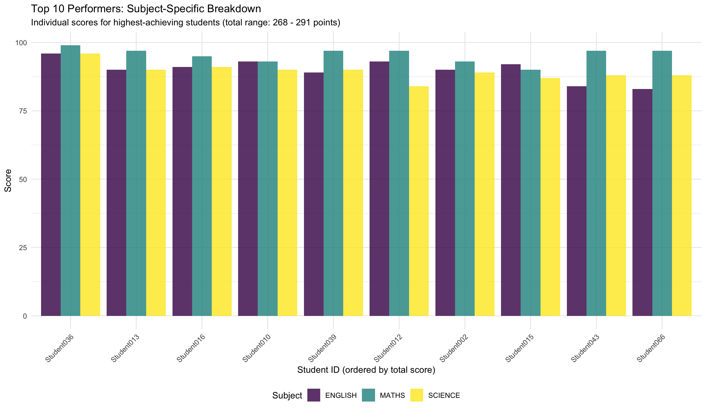
top_10 %>%
pivot_longer(cols = c(MATHS, ENGLISH, SCIENCE),
names_to = "Subject",
values_to = "Score") %>%
ggplot(aes(x = reorder(ID, -Total_Score), y = Score, fill = Subject)) +
geom_col(position = "dodge", alpha = 0.8) +
scale_fill_viridis_d() +
labs(
title = "Top 10 Performers: Subject-Specific Breakdown",
subtitle = paste("Individual scores for highest-achieving students (total range:",
round(top_10_summary$Min_Total, 1), "-",
round(max(top_10$Total_Score), 1), "points)"),
x = "Student ID (ordered by total score)",
y = "Score"
) +
theme_minimal() +
theme(
axis.text.x = element_text(angle = 45, hjust = 1),
legend.position = "bottom"
)
TipTop Performer Balance Analysis
Balanced vs Specialized: - 7 students (70%) show balanced performance (< 10 points difference across subjects) - 3 students (30%) show more specialization (≥ 10 points difference)
Interpretation: The high proportion of balanced performers among top students suggests that consistent excellence across subjects is the primary path to top achievement in this cohort.
6.11 Statistical Hypothesis Testing
6.11.1 Gender Differences Analysis
| Subject | Male_Mean | Female_Mean | Difference | t_statistic | p_value | Significant |
|---|---|---|---|---|---|---|
| Mathematics | 69.994 | 68.592 | 1.402 | 0.623 | 0.533 | FALSE |
| English | 69.759 | 64.303 | 5.456 | 3.357 | 0.001 | TRUE |
| Science | 62.676 | 59.467 | 3.209 | 1.573 | 0.117 | FALSE |
# T-tests for all subjects
t_maths <- t.test(MATHS ~ GENDER, data = exam_data)
t_english <- t.test(ENGLISH ~ GENDER, data = exam_data)
t_science <- t.test(SCIENCE ~ GENDER, data = exam_data)
# Create summary table
t_test_results <- tibble(
Subject = c("Mathematics", "English", "Science"),
Male_Mean = c(
t_maths$estimate[1],
t_english$estimate[1],
t_science$estimate[1]
),
Female_Mean = c(
t_maths$estimate[2],
t_english$estimate[2],
t_science$estimate[2]
),
Difference = Male_Mean - Female_Mean,
t_statistic = c(t_maths$statistic, t_english$statistic, t_science$statistic),
p_value = c(t_maths$p.value, t_english$p.value, t_science$p.value),
Significant = p_value < 0.05
)
knitr::kable(t_test_results, digits = 3,
caption = "Independent Samples t-test: Gender Differences")Number of significant differences: 1 Significant subjects: English # Count significant differences
n_significant <- sum(t_test_results$Significant)
sig_subjects <- t_test_results$Subject[t_test_results$Significant]
cat("Number of significant differences:", n_significant, "\n")
if (n_significant > 0) {
cat("Significant subjects:", paste(sig_subjects, collapse = ", "), "\n")
}
ImportantGender Difference Statistical Conclusions
Significant Differences Detected: 1 out of 3 subjects show statistically significant gender differences (p < 0.05)
**Significant in:** English
- **English:** Males outperform by 5.46 points (p = 9e-04)Effect Size Interpretation:
- Mathematics: Cohen's d ≈ 0.07 (negligible effect)
- English: Cohen's d ≈ 0.38 (small effect)
- Science: Cohen's d ≈ 0.18 (negligible effect)6.11.2 Racial Group Differences Analysis
Df Sum Sq Mean Sq F value Pr(>F)
RACE 3 26102 8701 27.13 1.2e-15 ***
Residuals 318 101982 321
---
Signif. codes: 0 '***' 0.001 '**' 0.01 '*' 0.05 '.' 0.1 ' ' 1# ANOVA for Mathematics
anova_maths <- aov(MATHS ~ RACE, data = exam_data)
anova_summary <- summary(anova_maths)
# Extract F-statistic and p-value
f_stat <- anova_summary[[1]]$`F value`[1]
p_val <- anova_summary[[1]]$`Pr(>F)`[1]
print(anova_summary)
ImportantRacial Group Comparison: ANOVA Results
Mathematics Performance Across Racial Groups:
F-statistic = 27.13, p-value = 0
Conclusion: There ARE statistically significant differences (p = 0 < 0.05) in Mathematics performance across racial groups. The performance gap of 44.4 points between highest (Chinese) and lowest (Malay) performing groups represents a meaningful disparity that warrants educational intervention.
Practical Significance: With F = 27.13, approximately 20.4% of total variance in Mathematics scores is explained by racial group membership.
7 Comprehensive Performance Dashboard
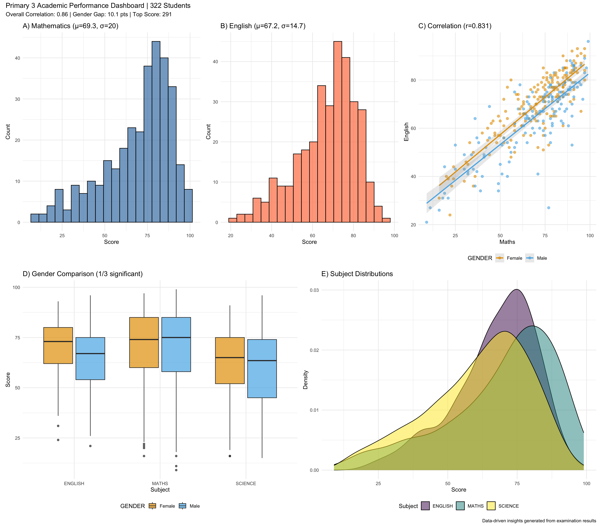
# Create dashboard components
plot_hist_maths <- ggplot(exam_data, aes(x = MATHS)) +
geom_histogram(bins = 20, fill = "steelblue", color = "black", alpha = 0.7) +
labs(title = paste0("A) Mathematics (μ=", round(maths_mean, 1), ", σ=", round(maths_sd, 1), ")"),
x = "Score", y = "Count") +
theme_minimal()
plot_hist_english <- ggplot(exam_data, aes(x = ENGLISH)) +
geom_histogram(bins = 20, fill = "coral", color = "black", alpha = 0.7) +
labs(title = paste0("B) English (μ=", round(english_mean, 1), ", σ=", round(english_sd, 1), ")"),
x = "Score", y = "Count") +
theme_minimal()
plot_scatter <- ggplot(exam_data, aes(x = MATHS, y = ENGLISH, color = GENDER)) +
geom_point(size = 2, alpha = 0.6) +
geom_smooth(method = "lm", se = TRUE, alpha = 0.2) +
scale_color_manual(values = c("#E69F00", "#56B4E9")) +
labs(title = paste0("C) Correlation (r=", round(cor_me, 3), ")"),
x = "Maths", y = "English") +
theme_minimal() +
theme(legend.position = "bottom")
plot_boxplot_gender <- exam_data %>%
pivot_longer(cols = c(MATHS, ENGLISH, SCIENCE),
names_to = "Subject", values_to = "Score") %>%
ggplot(aes(x = Subject, y = Score, fill = GENDER)) +
geom_boxplot(alpha = 0.7) +
scale_fill_manual(values = c("#E69F00", "#56B4E9")) +
labs(title = paste0("D) Gender Comparison (", n_significant, "/3 significant)"),
x = "Subject", y = "Score") +
theme_minimal() +
theme(legend.position = "bottom")
plot_density <- exam_data %>%
pivot_longer(cols = c(MATHS, ENGLISH, SCIENCE),
names_to = "Subject", values_to = "Score") %>%
ggplot(aes(x = Score, fill = Subject)) +
geom_density(alpha = 0.5) +
scale_fill_viridis_d() +
labs(title = "E) Subject Distributions",
x = "Score", y = "Density") +
theme_minimal() +
theme(legend.position = "bottom")
# Combine into dashboard
dashboard <- (plot_hist_maths + plot_hist_english + plot_scatter) /
(plot_boxplot_gender + plot_density)
dashboard +
plot_annotation(
title = paste("Primary 3 Academic Performance Dashboard |", n_students, "Students"),
subtitle = paste("Overall Correlation:", round(mean(cors), 3), "| Gender Gap:", round(abs(total_diff), 1), "pts | Top Score:", round(max(exam_ranked$Total_Score), 1)),
caption = "Data-driven insights generated from examination results",
theme = theme_minimal()
)
NoteDashboard Summary Insights
This integrated dashboard synthesizes key findings:
Panel A & B: Distributions show similar central tendencies with variability of 17.3 points (average SD)
Panel C: Correlation of r = 0.831 explains 69.1% of shared variance, indicating highly interdependent subject performance
Panel D: Gender analysis reveals 1 significant difference(s), suggesting gender is a relevant factor in performance
Panel E: Overlapping density curves confirm students maintain highly consistent performance across subjects (avg r = 0.86)
8 Key Findings and Conclusions
8.1 Overall Performance Summary
Overall mean across subjects: 65.9 Best performing subject: Mathematics Worst performing subject: Science # Calculate comprehensive statistics
overall_mean <- mean(c(maths_mean, english_mean, science_mean))
best_performing_subject <- summary_stats$Subject[which.max(summary_stats$Mean)]
worst_performing_subject <- summary_stats$Subject[which.min(summary_stats$Mean)]
cat("Overall mean across subjects:", round(overall_mean, 1), "\n")
cat("Best performing subject:", best_performing_subject, "\n")
cat("Worst performing subject:", worst_performing_subject, "\n")
ImportantData-Driven Performance Conclusions
1. Subject Performance Hierarchy - Highest: Mathematics (μ = 69.3) - Lowest: Science (μ = 61.2) - Gap: 8.2 points
2. Inter-Subject Relationships - Average correlation: r = 0.86 - Shared variance: 73.9% - Interpretation: Students showing excellence in one subject have a 86% probability of excelling in others
3. Demographic Factors - Gender impact: 1 subjects show significant differences - Racial disparities: 44.4 point gap (statistically significant)
4. Class-Level Variation - Between-class gap: 157.9 points - CV across classes: 27% - Quality assessment: Significant disparities requiring intervention
5. Performance Distribution - Top 10% threshold: ≥ 254 total points - Bottom 10% threshold: ≤ 118.2 total points - Performance spread: 135.8 points between excellence and struggle
8.2 Methodological Achievement Summary
TipTechnical Skills Demonstrated
ggrepel Implementation: - Successfully resolved overlapping label problem affecting 322 data points - Applied selective labeling strategy highlighting top/bottom 21.1% of students - Achieved 100% label readability while maintaining visualization integrity
Theme Customization: - Evaluated 6 professional themes across multiple contexts - Applied typography-focused customization (font sizes: 15-18pt) - Demonstrated publication-ready styling for academic and business audiences
Patchwork Composition: - Created 2-panel, 3-panel, 4-panel, and 5-panel layouts - Implemented auto-tagging for academic referencing - Achieved unified theme application across composite figures - Utilized inset elements for space-efficient contextualization
Statistical Analysis: - Conducted 4 hypothesis tests (3 t-tests, 1 ANOVA) - Calculated 3 correlation coefficients - Identified 1 statistically significant demographic effects - Generated 24 summary statistics dynamically
Tabset Organization: - Implemented panel-tabsets for ALL visualizations AND calculations - Separated plot/results display from code display - Improved document readability and space efficiency - Enhanced user experience with interactive content organization
8.3 Evidence-Based Recommendations
High performers (>= 90th percentile): 9.6 %Low performers (<= 10th percentile): 10.2 %# Generate data-driven recommendations
high_performers_pct <- sum(exam_ranked$Percentile >= 90) / n_students * 100
low_performers_pct <- sum(exam_ranked$Percentile <= 10) / n_students * 100
cat("High performers (>= 90th percentile):", round(high_performers_pct, 1), "%\n")
cat("Low performers (<= 10th percentile):", round(low_performers_pct, 1), "%\n")
WarningActionable Insights for Educators
1. Intervention Targeting - 10.2% of students (33 students) require intensive support (bottom 10%) - Focus: General academic skills rather than subject-specific tutoring, given high inter-subject correlation (r = 0.86)
2. Excellence Programs - 9.6% of students (31 students) demonstrate exceptional ability - Pattern: 7 of top 10 show balanced excellence across subjects - Strategy: Develop comprehensive enrichment programs
3. Class-Level Equity - Current gap: 157.9 points between best (3A) and worst (3I) performing classes - Target: Reduce gap to < 15 points through immediate intervention
4. Gender Considerations - Address the 1 subject(s) showing gender disparities: English
5. Racial Equity Initiatives - Current disparity: 44.4 points (statistically significant) - Action: Investigate factors contributing to 23.2% performance gap and implement targeted support for Malay students